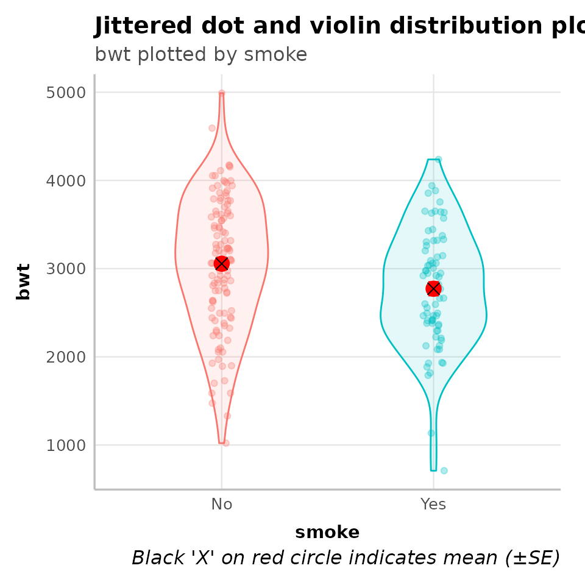
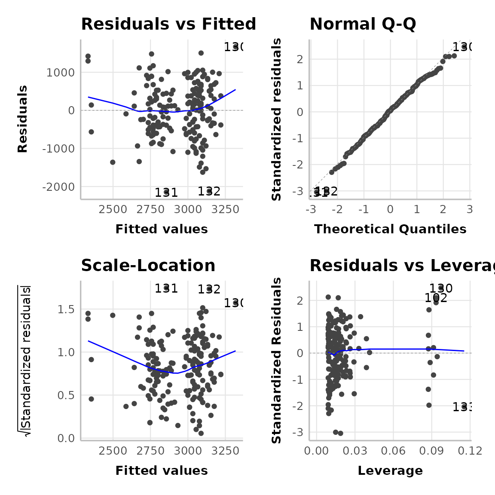
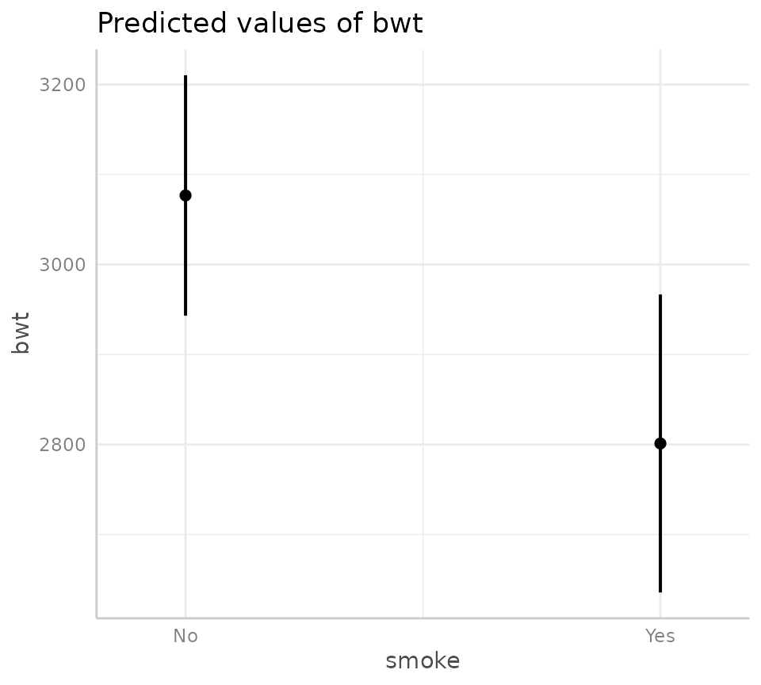

Overview
We are constantly working on the appearance of the reports we
generate for our colleagues and collaborators. This includes managing
.html and .docx output for different use
cases, all while navigating the move from R Markdown to Quarto. At this stage, we have all but
completely abandoned the idea of rendering directly to .pdf
as we find .docx more friendly (tracking changes with
collaborators, certain output manipulating functions) and it is readily
‘pdf-able’ - but more on all that in a future post.
Our primary report output format is .html and we have
been looking for ways to harness certain Quarto features to improve both
the aesthetic of our reports as well as our use of real estate. Often,
we are presenting output for a range of models separated by narration.
It is important that all models are presented with sufficient context
(as opposed to output just dumped on a page) and we’ve settled on what
we think is a nice way to ensure relevant information (like model
diagnostics) are readily available (and digestible) to the reader, as
opposed to being tucked away at the end — or worse — left out
altogether.
Below, we present the way we currently present output from a linear
regression in our .html reports.
Example Usage
To demonstrate, we will use a slightly modified dataset of Birth
Weight data (read more with ?MASS::birthwt) from the
MASS package (MASS::birthwt).
Data
dat_bwt <- MASS::birthwtThe dataset has 189 observations (rows) and in the code below we just tidy up some variables prior to running the model.
Building the model
We want to implement the following linear regression
(lm) model:
-
Outcome: infant birth weight
(
bwt). -
Exposure of interest: maternal smoking status
during pregnancy (
smoke). -
Covariates: maternal age (
age) and history of hypertension (ht).
This model can be generated using the thekids_model
function using the code below:
mod_bwt <- dat_bwt %>%
thekids_model(y = "bwt", x = "smoke", formula = "age + ht")
#> Warning: `fortify(<lm>)` was deprecated in ggplot2 4.0.0.
#> ℹ Please use `broom::augment(<lm>)` instead.
#> ℹ The deprecated feature was likely used in the ggfortify package.
#> Please report the issue at <https://github.com/sinhrks/ggfortify/issues>.
#> This warning is displayed once every 8 hours.
#> Call `lifecycle::last_lifecycle_warnings()` to see where this warning was
#> generated.
#> Warning: `aes_string()` was deprecated in ggplot2 3.0.0.
#> ℹ Please use tidy evaluation idioms with `aes()`.
#> ℹ See also `vignette("ggplot2-in-packages")` for more information.
#> ℹ The deprecated feature was likely used in the ggfortify package.
#> Please report the issue at <https://github.com/sinhrks/ggfortify/issues>.
#> This warning is displayed once every 8 hours.
#> Call `lifecycle::last_lifecycle_warnings()` to see where this warning was
#> generated.
#> Warning: Using `size` aesthetic for lines was deprecated in ggplot2 3.4.0.
#> ℹ Please use `linewidth` instead.
#> ℹ The deprecated feature was likely used in the ggfortify package.
#> Please report the issue at <https://github.com/sinhrks/ggfortify/issues>.
#> This warning is displayed once every 8 hours.
#> Call `lifecycle::last_lifecycle_warnings()` to see where this warning was
#> generated.In this, we have passed (piped: %>%) the
data into the first argument, specified the outcome variable as
y, the exposure of interest as x, and finally
the remainder of the models formula (that is, the
covariates we want to look at in our model).
Alternatively, we could run our model in the ‘normal’ way by passing
it into our output processing function thekids_model_output
— the workhorse of the function above — which would look like the
following:
my_model <- lm(bwt ~ smoke + age + ht, data = dat_bwt)
thekids_model_output(my_model, by = "smoke") # still requires specifying the exposure of interestThe objects defined above (mod_bwt,
my_model) are lists that contain outputs relating to our
selected model type.
Below, we will see how the output would appear in an
.html report.
Model output
Descriptive statistics
The table below shows summary statistics for all variables in the model by the primary exposure variable (maternal smoking status in pregnancy).
mod_bwt$mod_desc %>%
thekids_table(colour = "DarkTeal",
padding.left = 10, padding.right = 10)
#> Warning in check_font_family(font_family = font_family, fallback_family =
#> fallback_font_family): Font 'Barlow' not found; falling back to 'sans'.smoke |
No |
Yes |
p-value2 |
|---|---|---|---|
bwt |
3,056 (753) [115] |
2,772 (660) [74] |
0.007 |
age |
23 (5) [115] |
23 (5) [74] |
0.5 |
ht |
7 (6.1%) |
5 (6.8%) |
>0.9 |
1Mean (SD) [N Non-missing]; n (%) | |||
2Wilcoxon rank sum test; Fisher's exact test | |||
The figure below shows the distribution of the primary outcome variable (infant birth weight) by the primary exposure variable (maternal smoking status in pregnancy).
mod_bwt$mod_desc_plot
Model diagnostics
The four panel plot below shows diagnostic plots that can aid in determining if the required assumptions of model are met. Based on the diagnostics below, the model fit is deemed to be good.
mod_bwt$mod_diag
Broadly, what we are looking for in these plots (and why) are:
|
Linear relationship check relatively even bands of points around a flat line at 0 as we move from left to right. |
Normal distribution of errors check the points to fall close to the diagonal line. |
|
Influential observations check the points funnel close to 0 as we move from left to right with no extreme values in the top right or bottom right corners. |
Homoscedasticity check checking residuals are relatively evenly spread across the range of predictions. |
Model output
The table below shows the model output for the linear regression model, including the beta coefficient (and 95% confidence interval) and p-values associated with each variable in the model.
mod_bwt$mod_output %>%
thekids_table(colour = "DarkTeal",
padding.left = 10, padding.right = 10)
#> Warning in check_font_family(font_family = font_family, fallback_family =
#> fallback_font_family): Font 'Barlow' not found; falling back to 'sans'.Characteristic |
Beta |
p-value |
|---|---|---|
(Intercept) |
2,824.1 (2,351.4, 3,296.7) |
0.000 |
smoke |
||
No |
— |
|
Yes |
-275.7 (-485.1, -66.2) |
0.010 |
age |
11.0 (-8.4, 30.3) |
0.264 |
ht |
||
No |
— |
|
Yes |
-424.2 (-843.0, -5.4) |
0.047 |
Abbreviation: CI = Confidence Interval | ||
Model effect
The figure and table below show the predicted values (also known as the estimated marginal mean) for the outcome variable (infant birth weight) for each level of the exposure of interest (i.e., no maternal smoking in pregnancy or maternal smoking in pregnancy), along with a 95% confidence interval. Note, see table footnote for the values used for the other variables in the model.
mod_bwt$model %>%
ggeffects::predict_response("smoke") %>%
plot
mod_bwt$model %>%
ggeffects::predict_response("smoke") %>%
ggeffects::print_html()| smoke | Predicted | 95% CI |
|---|---|---|
Adjusted for: age = 23.00, ht = No | ||
| No | 3076.84 | 2943.20, 3210.47 |
| Yes | 2801.18 | 2635.57, 2966.79 |